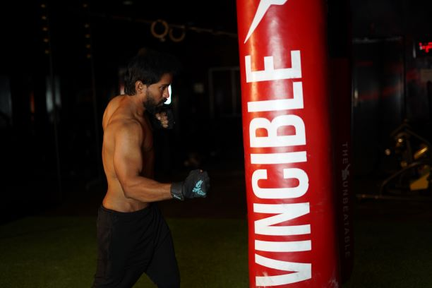

<div class="row">
    <div class="col-md-3 mt-5 ml-5 d-flex">
        
    </div>
    <div class="col-md-6">

    <h1 class="mt-3"style="font-size: 58px;">The Boxing / MMA</h1>
    <h2 class="mt-5"> There are many ways of 
        
        achieving a chiseled body but for 
        some people like Srujan Jay, 
        repetitive exercises at machines can get 
        dull. He prefers the boxing ring. He’s got 
        the focused, fighter instinct that he has 
        honed over the years. “We boxers are 
        drawn to it because we prefer its individua￾listic nature (as opposed to team-based 
        nature) and we develop that self-respect & 
        unparallelled mental fitness,” All qualities 
        that surely serve him well as Managing 
        Director of UFC-XTREME Fitness. 
        Srujan is certified by the American Council 
        on Exercise and a master trainer of boxing 
        and Mixed Martial Arts (MMA). A holder of 
        a Masters in Pharmacy, he is a certified 
        nutritionist with a list of qualifications that 
        would run off a page. This makes him 
        stand out in a market saturated with 
        poorly-qualified trainers and substandard 
        equipment. He brings his holistic 
        knowledge and his philosophy of fitness to 
        the way he runs UFC, so that all those who 
        train there, progress in a holistic manner. 
        “Let’s fight for our health!” he says. After 
        all, fitness begins first in the mind.  </h2>
        <div class="col-md-3">

        </div>
        <div class="row">
            <div class="col-md-12 mt-3">

                <div id="carouselExampleIndicators" class="carousel slide" data-ride="carousel">
                    <ol class="carousel-indicators">
                      <li data-target="#carouselExampleIndicators" data-slide-to="0" class="active"></li>
                      <li data-target="#carouselExampleIndicators" data-slide-to="1"></li>
                      <li data-target="#carouselExampleIndicators" data-slide-to="2"></li>
                    </ol>
                    <div class="carousel-inner">
                      <div class="carousel-item active">
                        
                      </div>
                      <div class="carousel-item">
                        
                      </div>
                      <div class="carousel-item">
                        
                      </div>
                      <div class="carousel-item">
                        
                      </div>
                    </div>
                    <a class="carousel-control-prev" href="#carouselExampleIndicators" role="button" data-slide="prev">
                      <span class="carousel-control-prev-icon" aria-hidden="true"></span>
                      <span class="sr-only">Previous</span>
                    </a>
                    <a class="carousel-control-next" href="#carouselExampleIndicators" role="button" data-slide="next">
                      <span class="carousel-control-next-icon" aria-hidden="true"></span>
                      <span class="sr-only">Next</span>
                    </a>
                  </div>
            </div>
        </div>